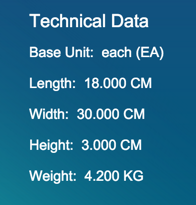
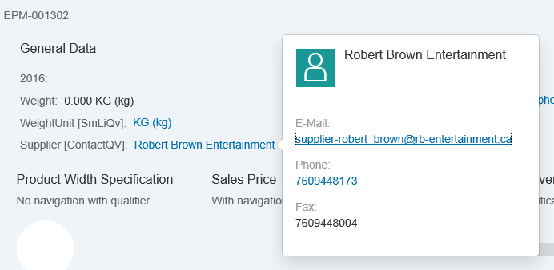

You can add a form facet to the object page header. To do so, add a
UI.ReferenceFacet that points to
UI.FieldGroup or
UI.Identification. If you provide a label in
the UI.ReferenceFacet, it is used as the form's
title.

The header form facet supports the display of a contact with a quick view, as shown
below:

The sample code below shows the UI.FieldGroup.
In the sample code above, the third record is a
UI.DataFieldForAnnotation, which, in this case,
points to a contact annotation on a different entity that has a 1:1 relation to the root
entity. The label is derived from the label in the
UI.DataFieldForAnnotation and the value is the
fn property of the contact annotation.
The last record is a
UI.DataFieldWithIntentBasedNavigation to render
the property value as a link, allowing for navigation to the semantic object.